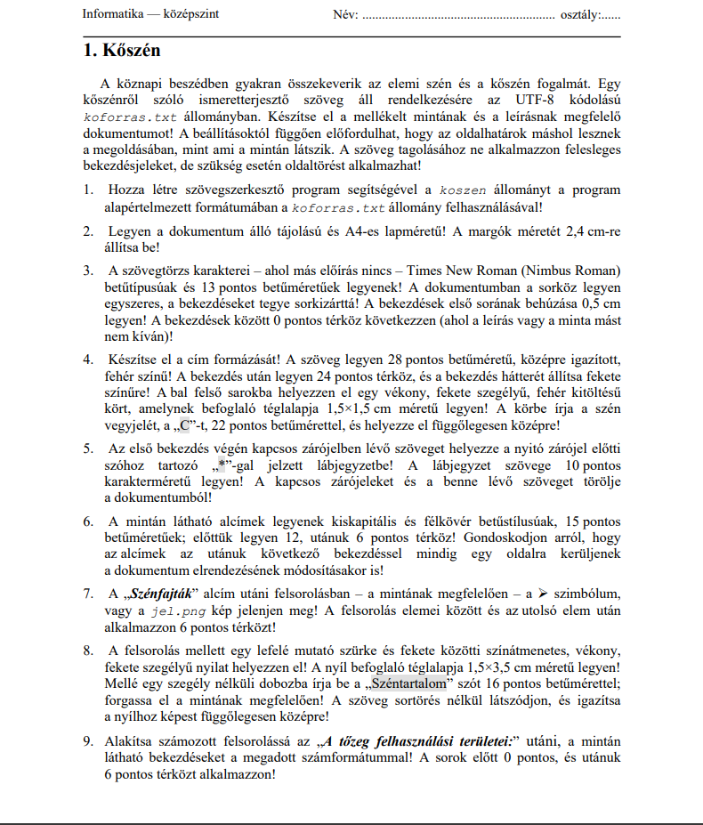
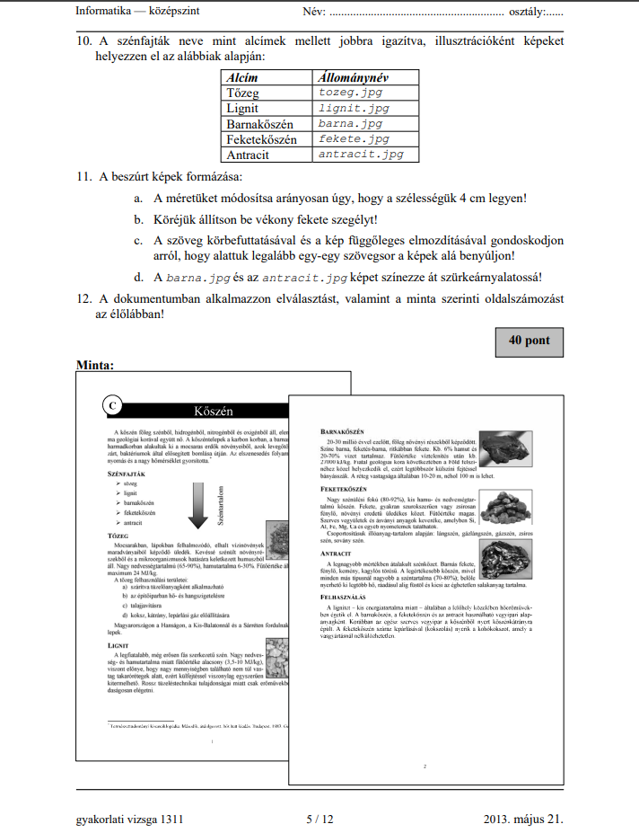
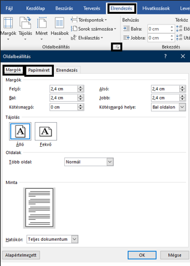
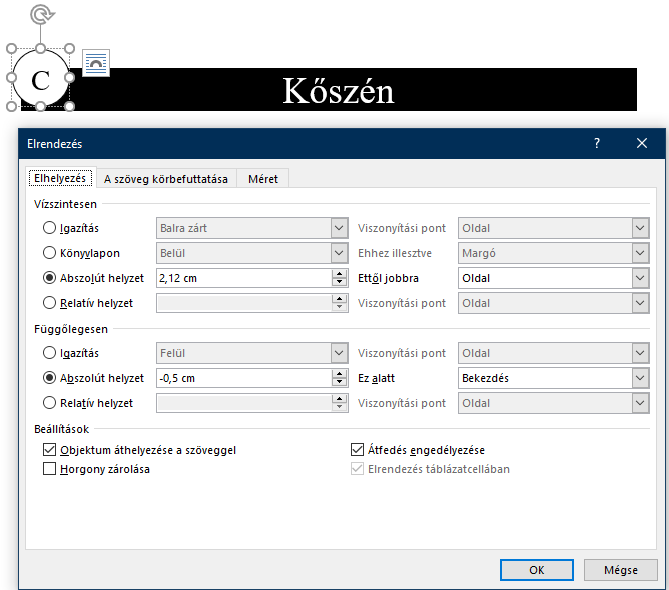
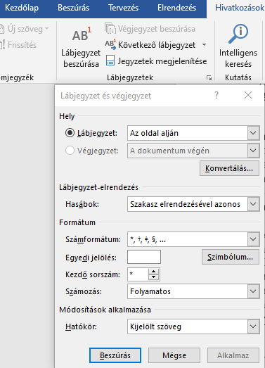
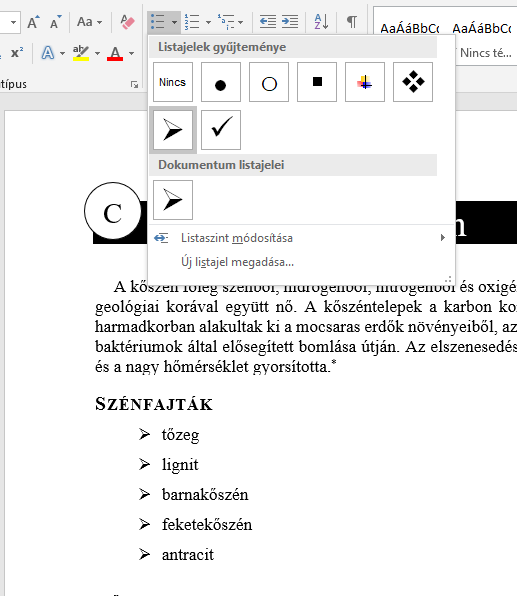
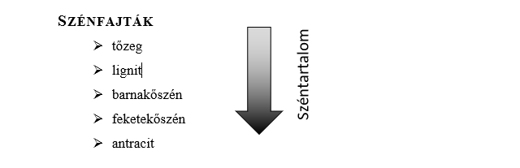
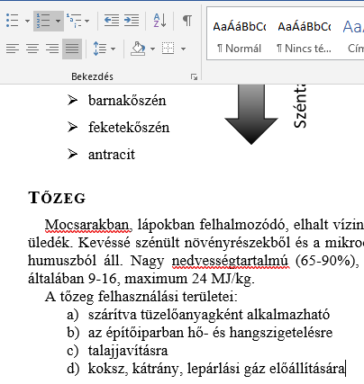
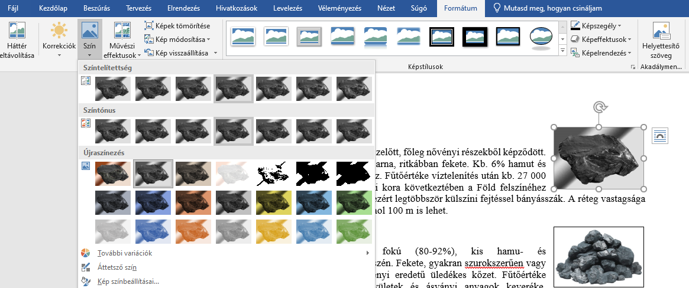

Ha már begyakoroltuk az alapszintű feladatokat és úgy érezzük szeretnénk egy komolyabb, összetettebb kihívás elé állni, vagy konkrétan van egy színt melyre szeretnénk felkészülni kiváló lehetőség az interneten ingyenesen megtalálható eddigi informatika érettségik feladatai és megoldásai.
https://www.oktatas.hu/kozneveles/erettsegi/feladatsorok
Egyszerre nyújtanak komplex feladatokat és ha valami meghaladja jelenlegi tudásunk a megoldásokban választ kaphatunk.
Ha ezen feladatlapokból eleget gyakorlunk akkor biztosak lehetünk benne hogy magán az érettségit is teljesíteni tudjuk.
Csináljunk meg egy példát közösen
Most a 2013 májusi középszintű érettségi feladatot választottam, melynek címe a Kőszén.
https://www.oktatas.hu/kozneveles/erettsegi/feladatsorok/kozepszint_2013tavasz/kozep_12nap
Feladatlapja a következő:


Első dolgunk alaposan átolvasni a szöveget, hogy miket is várnak el tőlünk. Majd nézzük át a mintát ami a 2. oldal alján található.
Fontos, hogy ha a feladatleírásból valami nem világos a minta tud nekünk útmutatást adni.
1. Feladatunk hogy a kapott txt állományból kimásoljuk a benne lévő szöveget, majd elmentsük a Word fájlunkat a megadott néven. (koszen)
2. Feladatunk hogy a dokumentum álló tájolású A4 es méretű legyen, a margók méretét pedig állítsuk 2,4 cm-re.
Ezt az Elrendezés fül oldalbeállítások részén tehetjük meg. (Legegyszerűbb lenyitni a kis fület a jobb alsó sarkában)

3. Feladatunk beállítani a betűméretet a sorközt a bekezdéseket és a térközt és a behúzást.
Ehhez először ki kell jelölni az összes szöveget, majd a kezdőlap oldal Betűtípus és Bekezdés részeinél állítsuk be a feladatban megadott értékeket.
4. Feladatunk a cím formázása
Ehhez részletesen olvassuk el a feladatot és nézzük meg a mintát.
Elkészítéséhez kijelöljük a cím szövegét majd beállítjuk a betűméretet és a színt és az igazítását. A térközt és a bekezdés hátterét is a kezdőlapon találjuk.
Ezután beszúrunk egy kört az alakzatokból és az ekkor megjelenő formátum oldalon beállítjuk a szegélyét a színét és a méretét. Szöveg hozzáadásával a körbe írjuk a kívánt betűt a kért méretben. majd függőlegesen középre igazítjuk.
Ahhoz hogy a kör a mintának megfelelő helyen legyen az elrendezési beállításoknál a szöveg elé állítjuk mert most azt kéri a minta hogy a fekete rész előtt legyen, a helyzetét az oldalhoz igazítjuk hogy az egér mozgatásával bepozicionálhassuk a megfelelő helyre.

5. Feladatunk, hogy az első bekezdés végén megadott zárójeles szöveget egy csillaggal jelölt lábjegyzetbe helyezzük.
Ehhez kijelöljük a szöveget, kimásoljuk majd a szóhoz megyünk a végére. Ahol a hivatkozások lábjegyzet beszúrása gombbal meg is oldhatnánk a feladatot. De a mostani csillagot kér nem egyest ezt a hivatkozások lábjegyzetek fülnél a számformátumnál lehet átállítani.

6. Feladatunk az alcímek megformázása a leírtak szerint.
Ezeket a beállításokat a kezdőlap fül Betűtípus része alatt találjuk.
7. Feladat a megadott szavak felsorolássá alakítása.
Ehhez nézzük meg a mintát és jelöljük ki az adott szövegrészt. Majd a kezdőlap felsorolás menüpont melletti kis nyíl lenyitásával válasszuk ki a megfelelő szimbólumot. Aztán a bekezdés fül kis nyilával nyissuk meg a bekezdés ablakot és állítsuk be a térközt.

A 8. feladat teljesítéséhez egy nyilat kell beszúrnunk a felsorolás mellé. Első lépésként nézzük meg a mintát. hogy pontosabb képet kapjunk az elkészítendő feladatról.

Ahhoz hogy egy ilyen végeredményt kapjunk, be kell szúrnunk a nyilat beállítani a méretét és a fekete körvonalát. A feladat külön kérésének eleget téve a kitöltésnél válasszuk a színátmenetet, a két szín a szürke és a fekete amik kellenek és a minta alapján próbáljuk beállítani a megfelelő kinézetet.
9. feladatunk egy számozott felsorolás kialakítása, megfelelő térközzel.
A megfelelő szöveg kijelölése után válasszuk a kezdőlap bekezdés fül számozott felsorolás pontja melletti kis nyilat, melyben kiválaszthatjuk a kívánt formátumot.
A pontos térköz beállításához a bekezdés rész jobb alsó sarkában található kis nyíl fog nekünk újfent segíteni.

A 10. feladatban a megadott képeket kell a szöveg megfelelő helyeire beszúrni.
ezt is többféleképp lehet de a legegyszerűbb ha kiválasztjuk a források mappából a képet másoljuk és a szöveg megfelelő helyén beillesztjük.
A 11. feladatban ezeket a beszúrt képeket kell megformázni melyeknek a menete, beillesztés után át kell állítani a méretüket 4 cm-re és az elhelyezkedését a szöveggel körbefuttatva. Mindkettőt a formátum oldalon tehetjük meg amikor kiválasztjuk a képet. Valamint fekete szegélyt kell beállítani nekik amit a képszegély menüpont alatt tehetünk meg.
A mintának megfelelően gondoskodjunk arról, hogy a képek alatt egy sor még végigfut, a két külön megadott képet a formátum oldal szín szürkeárnyalatos opciójával tehetjük a kért színtónusba.

A 12. feladat jó teret biztosít nekünk, hogy a mintával összehasonlítva megnézhessük minden egyezik e.
Valamint a feladat kérése szerint szúrjunk be egy oldaltörést a megfelelő helyre, egy oldalszámozást a megfelelő részére a lapnak. Mind a kettő a beszórás oldalon található, az oldaltörésnél előtte kattintsunk a megfelelő helyre.
Érdemes gyakran menteni, ha valami olyat tettünk ami nem az amit szerettünk volna a vissza nyíl segít helyrehozni.
Jó munkát kívánok!